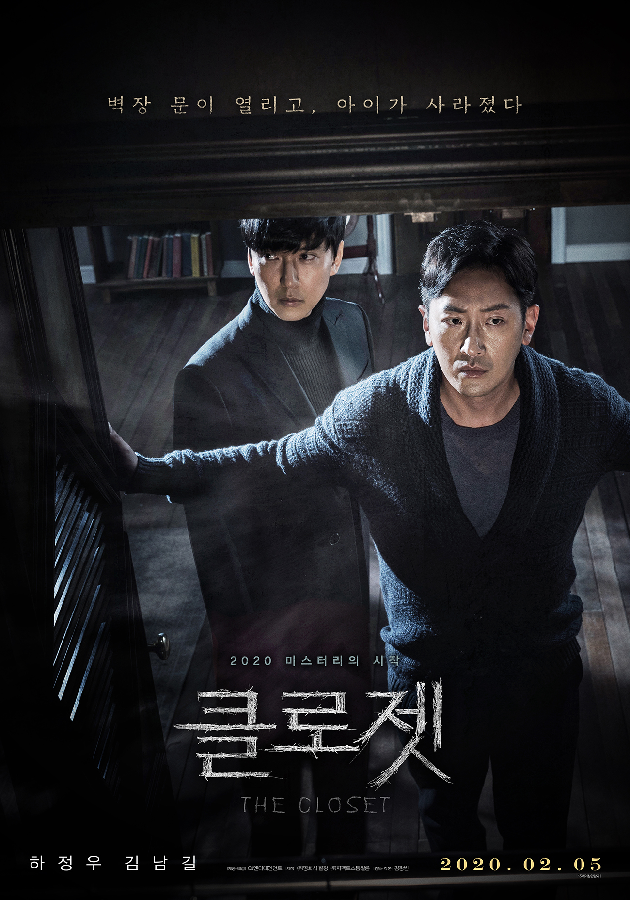

클로젯, 2020
열혈사제를 보고 김남길 배우 급호감이 되어 영화도 보러갔으나
영화자체는 밋밋했습니다.
설정도 좋고 아이디어도 괜찮았지만 참으로 평이하고 예상가능하게 이야기가 흘러갑니다.
호러에 겁나 교훈적인 내용...............을 표현하는 방식도 세련되지않았구요;;
셜록 이나 멋진 징조들 처럼 드라마로 만들어 짧은 에피소드 여러편을 보고싶네용.